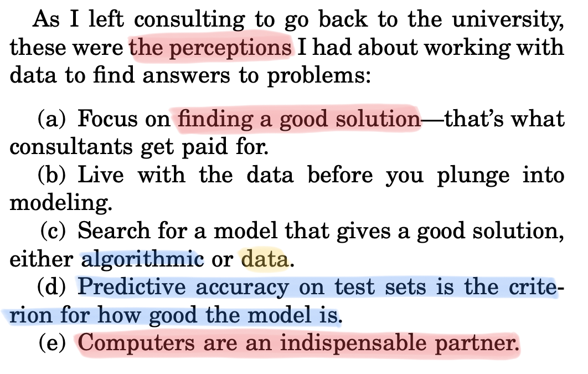
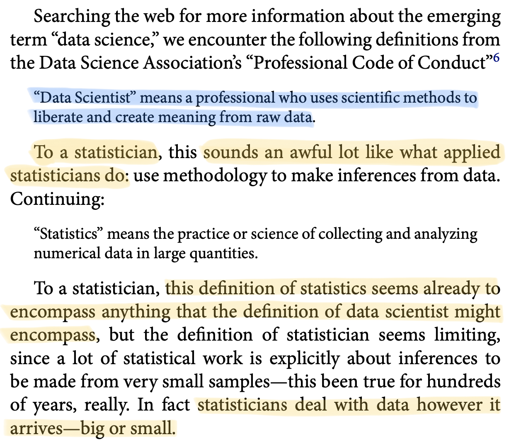

Introduction
Data Mining - CdL CLAMSES
Traffic prediction in telecommunications

The marketing section of a telecommunications company is interested in analyzing the customer behavior.
Hence, the data science team would like to predict, for every single customer, the telephone traffic.
Traffic is measured as the total number of seconds of outgoing calls made in a given month by each customer.
Appropriate estimations of the overall traffic provide necessary elements for:
- predicting the company’s budget;
- early identification of possible dissatisfaction;
- finding issues in the primary services of the company;
- spotting fraudulent situations.
The dataset has n = 30.619 customers and p = 99 covariates, i.e., the customer activity in previous months.
Microarray cancer data

Expression matrix of p = 6830 genes (rows) and n = 64 samples (columns), for the human tumor data.
100 randomly chosen rows are shown
The picture is a heatmap, ranging from bright green (under-expressed) to bright red (overexpressed).
Missing values are gray. The rows and columns are displayed in a randomly chosen order.
Goal: predict cancer class based on expression values.
The main statistical difficulty here is that p > n!
Logistic regression and discriminant analysis wouldn’t work; the estimates do not exist.
Is it even possible to fit a model in this context?
A highly influential paper (Breiman, 2001)

Focus on predictive accuracy & business solutions


After the Ph.D., Breiman resigned and went into full-time free-lance consulting, and it worked as a consultant for thirteen years.
Breiman joined the UC Berkeley Statistics Department in 1980.
Leo Breiman died in 2005 at the age of 77. He invented many of the mainstream predictive tools: CART, bagging, random forests, stacking.
Predictive interpretability \neq causality

Predictive interpretability means transparent understanding the driving factors of the predictions. An example is linear models with few (highly relevant) variables.
For example, if I change the value of a set of covariates, what is the impact on predictions?
This is useful, especially within the context of ethical AI and machine learning.
However, the predictive relevance of a variable does not imply a causal effect on the response.
Finding causal relationship requires careful thinking, a suitable sampling design, or both.
50 years of data science (Donoho, 2017)


Course material


- Azzalini, A. and Scarpa, B. (2011), Data Analysis and Data Mining, Oxford University Press.
- Hastie, T., Tibshirani, R. and Friedman, J. (2009), The Elements of Statistical Learning, Second Edition, Springer.